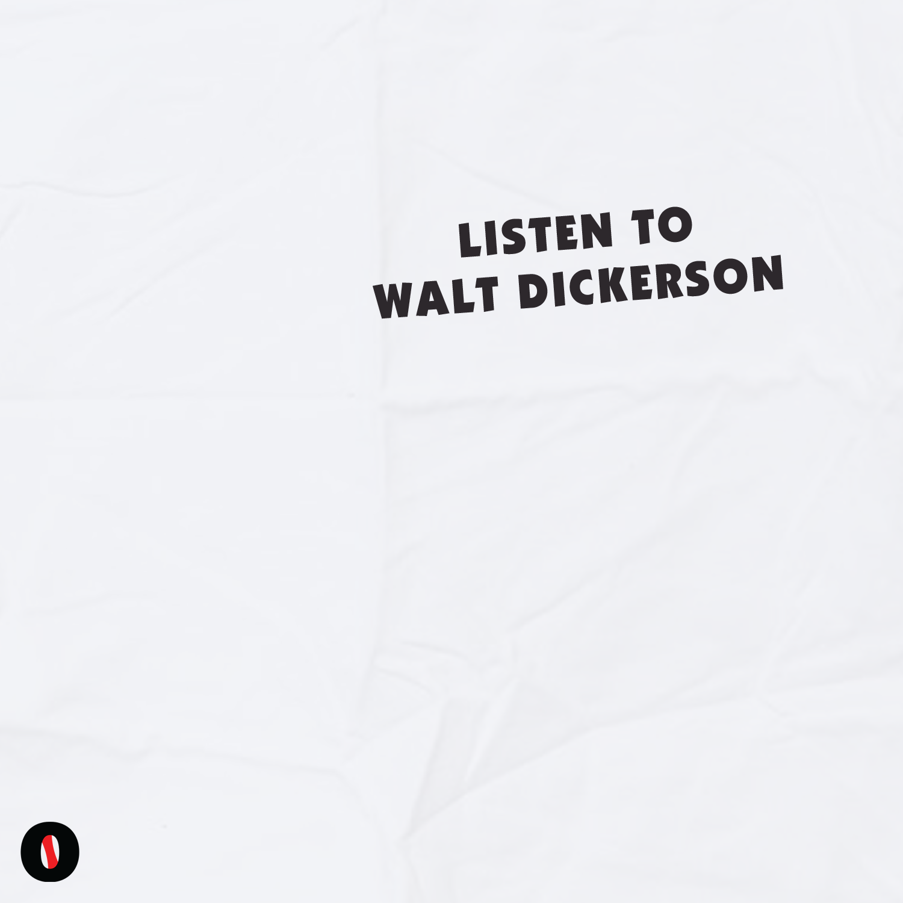

LISTEN TO WALT DICKERSON
(2018) Download: MP3

Blink-182 Lemmings
Blink-182 Cacophony
Saves the Day Through Being Cool
Gucci Mane Work in Progress
Slim Jxmmi Stunting Ain't Nuthin
Ornette Coleman Eventually
DJ Krush, Qur'an Goodman, Trackmasters Break Ups 2 Make Ups Remix
George Clinton George Clinton Got 4 Funkadelic Masters Back
DJ Screw, E.S.G. Sailin' da South
Soulja Boy Whole Lot of Money
Jlin Never Created, Never Destroyed
Adrock Sway in the Morning
Earl Sweatshirt Amoeba: What's in My Bag
Future Group Home
Toiret Status #28
The Dillinger Escape Plan Destro's Secret [live]
J Mascis A Little Ethnic Song